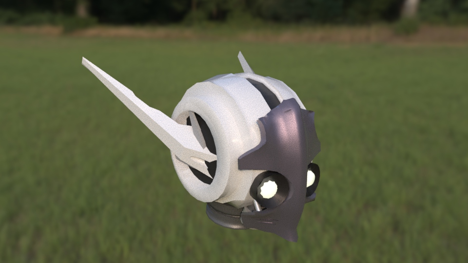

visual arts
Concept art
For a few of my projects I produced concept art to illustrate
visual ideas with an emphasis on the speed of production.


Animation & 3D
This is a render of a mecha head poly modeled in Maya. The skydome hdri image is from here.

This is a selection of animations from a 2D Fighter I developed.
The following videos were created using both After Effects and Live2D( a 2D rigging and modeling software)
Character Design
My design process is based on repeated itereation. It seperates color from shape to maintain focus.
when working with a client I will first create a few greyscale general themes. once they choose a theme, I will
produce more fine tuned greyscal designs. After one of these designs is chosen, I will iterate through a few
color designs until the end result is accomplished.


Illustration
The following illustrations of mine show examples of light, atmospheric perspective,
ambient occlusion, optical bloom, sub surface scattering, depth of field, the fresnel effect
and other visual phenomena. Note that images 1,3, and 5 contain characters from exisitng commercial works
(Dungeon and Fighter, Made in Abyss and Guilty Gear respectively). All others are my original designs.


These pieces were created traditionally. Note that the portrait
was drawn from reference.
.jpg)